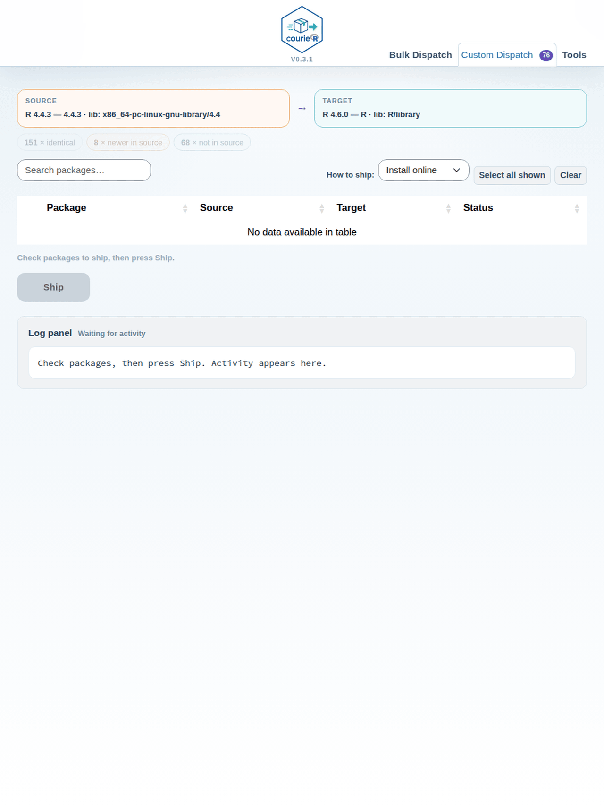

courieR syncs installed R packages between R versions on the same machine. You can migrate from an old version to a new one, or selectively push packages from a source installation into a target installation — all from the R console or from a point-and-click dashboard.
Installation
Install courieR from CRAN:
install.packages("courieR")Or install the development version from GitHub:
pak::pkg_install("lennon-li/courieR")All dependencies — including the dashboard packages — are installed automatically.
Step 1 — Discover Your R Installations
find_routes() scans the system and returns a data frame
of every R version it can find:
library(courieR)
routes <- find_routes()
routes
#> version rscript_path is_current
#> 1 4.4.2 C:/Program Files/R/R-4.4.2/bin/x64/Rscript.exe TRUE
#> 2 4.3.1 C:/Users/you/AppData/Local/Programs/R/R-4.3.1/bin/... FALSE
#> 3 4.1.3 C:/Users/you/Documents/R/R-4.1.3/bin/... FALSEis_current = TRUE marks the R session you are running
right now.
Platform detection
| Platform | Locations checked |
|---|---|
| Windows | HKLM/HKCU registry, %ProgramFiles%\R,
%LOCALAPPDATA%\Programs\R,
%USERPROFILE%\Documents\R, rig |
| macOS |
/Library/Frameworks/R.framework,
~/Library/Frameworks/R.framework, Homebrew
(/opt/homebrew, /usr/local), rig |
| Linux |
/opt/R (rig system), ~/.local/share/rig/R
(rig user), conda envs, system Rscript on
$PATH
|
To include a non-standard path, pass it explicitly:
routes <- find_routes(search_paths = "/opt/custom-r/bin/Rscript")CLI Workflow
The four core functions form a pipeline:
find_routes() → manifest() → inventory() → ship()
discover scan compare migrateStep 2 — Scan a library with manifest()
manifest() runs a subprocess under a given Rscript and
returns every installed package with its version and source:
# scan the first (newest) R
src_pkgs <- manifest(rscript_path = routes$rscript_path[1])
head(src_pkgs[, c("package", "version", "source")])
#> package version source
#> 1 broom 1.0.7 CRAN
#> 2 callr 3.7.6 CRAN
#> 3 courieR 0.2.0 GitHub
#> 4 ggplot2 3.5.1 CRAN
#> 5 glue 1.8.0 CRAN
#> 6 stringr 1.5.1 CRANCalling manifest() with no arguments scans the library
of the current R session:
Base and recommended packages are excluded automatically — the returned data contains only user-installed packages.
Step 3 — Compare two libraries with inventory()
inventory() takes two manifests and returns a classified
diff:
src_pkgs <- manifest(rscript_path = routes$rscript_path[2]) # old R
tgt_pkgs <- manifest(rscript_path = routes$rscript_path[1]) # new R
comp <- inventory(src_pkgs, tgt_pkgs)The result is a list with three elements:
# packages in source but missing from target
nrow(comp$missing)
#> [1] 47
# packages where source has a newer version
nrow(comp$outdated)
#> [1] 12
# packages at the same version in both
nrow(comp$same)
#> [1] 201Inspect what needs to move:
comp$missing[, c("package", "version", "source")]
#> package version source
#> 1: bookdown 0.39 CRAN
#> 2: brms 2.21.0 CRAN
#> 3: officer 0.6.6 CRAN
#> ...
comp$outdated[, c("package", "version.x", "version.y", "source")]
#> package version.x version.y source
#> 1: ggplot2 3.5.1 3.4.4 CRAN
#> 2: tibble 3.2.1 3.2.0 CRANStep 4 — Migrate with ship()
ship() takes a source and target Rscript path, computes
the plan internally, and runs it:
result <- ship(
source_path = routes$rscript_path[2], # old R — package source
target_path = routes$rscript_path[1] # new R — install destination
)Include version upgrades
By default, ship() only installs missing packages. Pass
upgrade = TRUE to also update packages that are present but
at an older version (mirrors what the Bulk Dispatch tab does):
result <- ship(
source_path = routes$rscript_path[2],
target_path = routes$rscript_path[1],
upgrade = TRUE
)Check results
# per-package outcomes
result$results
#> package status message
#> 1: bookdown success Installed
#> 2: brms success Installed
#> 3: rJava error installation of rJava failed...
# count by outcome
table(result$results$status)
#> error success
#> 1 58
# failed packages only
result$results[result$results$status == "error", ]Migrate GitHub and Bioconductor packages
ship() detects source-specific packages automatically.
CRAN packages are reinstalled from CRAN; GitHub packages become
"owner/repo" pak specs; Bioconductor packages use
"bioc::pkg" specs. No extra configuration needed.
# mixed-source example — all handled automatically
result$plan[, c("package", "source", "pak_spec")]
#> package source pak_spec
#> 1: ggplot2 CRAN ggplot2
#> 2: courieR GitHub lennon-li/courieR
#> 3: DESeq2 Bioconductor bioc::DESeq2Transfer modes
ship() (and the dashboard’s Transfer
mode selector) offers three mutually-exclusive ways to move
packages. Pass one via mode =:
| Mode | What it does | When to use |
|---|---|---|
"online" (default) |
Reinstall each package fresh via pak — latest compatible version, dependencies resolved. Pure-R and local packages are copied directly (no rebuild); only compiled packages are reinstalled, preferring pre-built binaries. | Moving between different R versions, where compiled packages must be rebuilt for the new R. |
"offline" |
Copy package files directly from the source library — fast, no internet, exact same versions. | Same R x.y series, or air-gapped machines. |
"preserve" |
Same direct copy as offline, but anything that can’t be
copied is reinstalled via pak at its exact source version. |
Same series, when you want a network safety net. |
Why copy modes need the same R x.y series
A package’s compiled code (the
.dll/.so files under libs/) is
built against a specific R minor version’s binary
interface. Packages compiled for R 4.5.x will not reliably load under R
4.6 — they must be rebuilt. So:
-
Within the same series (e.g. 4.5.0 ↔︎ 4.5.2) copying
is binary-safe, and
offline/preserveare the fast choice. -
Across minor versions (e.g. 4.5 → 4.6) compiled
packages must be reinstalled, so only
onlineis safe. The dashboard hides the copy modes for such pairs automatically.
Pure-R packages (no libs/) are version-independent, so
online copies those directly even across versions and only
rebuilds the compiled minority.
# explicit mode
ship(source_path = old_r, target_path = new_r, mode = "offline")Common Recipes
One-way migration (old R → new R)
The shortest path uses migrate(), which looks up
installations by version string so you don’t need to handle paths
yourself:
library(courieR)
# dry run first
migrate("4.5.2", "4.6.0", dry_run = TRUE)
# for real
result <- migrate("4.5.2", "4.6.0")
table(result$results$status)For more control — filtering by package, custom paths, or progress
callbacks — use ship() directly:
routes <- find_routes()
old_r <- routes$rscript_path[!routes$is_current][1]
new_r <- routes$rscript_path[routes$is_current]
result <- ship(source_path = old_r, target_path = new_r, upgrade = TRUE)Mirror two same-version installs
ship() always moves packages one way, from
source_path into target_path. To bring two
same-version installations into line with each other, run it twice,
swapping the roles:
Save a manifest to disk
pkgs <- manifest(rscript_path = routes$rscript_path[1])
write.csv(pkgs[, c("package", "version", "source")], "my_packages.csv", row.names = FALSE)Restore from a saved manifest on a new machine:
saved <- read.csv("my_packages.csv", stringsAsFactors = FALSE)
# pak installs from a character vector of package names
pak::pkg_install(saved$package)Dashboard
hub() launches a Shiny dashboard that wraps the same
pipeline:
Bulk Dispatch
The Bulk Dispatch tab compares two R libraries and ships all missing or outdated packages in one operation.

Bulk Dispatch: detect R installations, click Compare, review the colour-coded summary chips and package table, then Ship. The log pane on the right shows real-time progress; a live hero panel counts delivered packages during the ship.
Workflow:
- The dashboard scans all R installations automatically — no configuration needed.
- Select a source and a target from the sidebar. The target list is constrained to the same-or-newer R minor version.
- Click Compare. The coloured chips above the table show counts for each status (missing from target, newer in source, etc.). By default only missing from target packages are shown — click any chip to add or remove statuses from the view.
- Click Ship to install the source’s packages into the target. A confirmation dialog shows the package count and an estimated time.
- The log pane updates in real time; a live hero panel counts packages as they are delivered. Detailed pak output streams to the R console.
The first sync on a machine can take 1–2 minutes while pak builds its metadata cache. Subsequent syncs are faster.
Custom Dispatch
The Custom Dispatch tab lets you cherry-pick individual packages instead of bulk-shipping everything.

Custom Dispatch: colour-coded filter chips narrow the table to the statuses you care about; check individual packages and press Ship. The Repo column highlights packages with an unknown source in red.
Workflow:
- After a Compare in Bulk Dispatch, open the Custom Dispatch tab — the same comparison is shared, so no rescan is needed.
- Use the coloured filter chips to narrow the table (default: not in target only). Click any chip to toggle that status group on or off.
- The Repo column shows each package’s origin (CRAN, Bioconductor, GitHub, or red unknown for local/private packages).
- Check the packages you want to ship, choose Install online or Ship as-is, and press Ship N selected.
- The log pane and hero panel track progress in real time.
The Browse and Manifest panels
under the Tools tab expose manifest()
output and let you inspect any detected R installation’s full package
list.
Tips
-
hub()is a short alias forhub()— both launch the dashboard - courieR skips base and recommended packages automatically — only user-installed packages are compared and migrated
-
ship()usespakunder the hood, which resolves dependencies automatically - Use
mode = "offline"when you have no internet access — courieR copies package directories directly. Packages without a local source path are reported as skipped - Use
mode = "preserve"to keep exact version numbers; courieR copies where possible and pins the version in the pak spec otherwise - The source R installation does not need any extra packages; only the
target R needs
pakinstalled, because installation runs under the target R process - GitHub packages require the source repository to be public, or a
GITHUB_PATto be set in the environment - If a package fails, check
result$results— themessagecolumn has the pak error - Use
dry_run = TRUEbefore any large migration to review the plan without installing anything - On Linux without rig,
find_routes()may only detect the R on$PATH; pass additional paths viasearch_pathsif needed